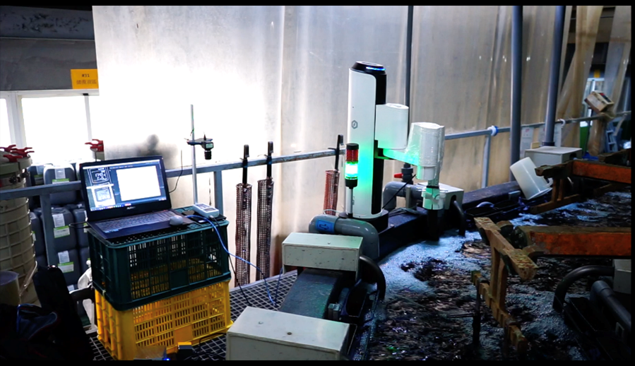
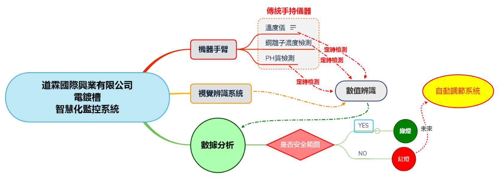
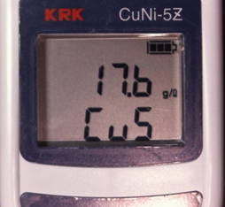
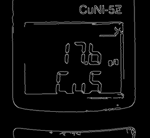
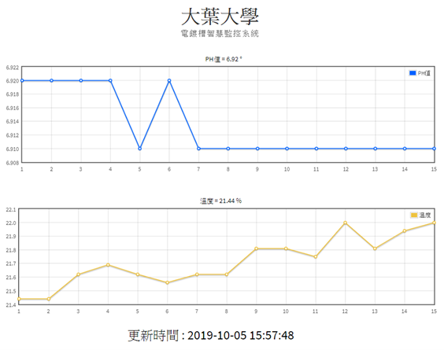

中部是台灣金屬加工和電鍍產業的重鎮，而在現今電鍍槽溶液的檢驗多依賴人工檢測電鍍槽溶液濃度，檢測次數太少或發生遺忘，便無法隨時針對電鍍溶液濃度的變化作即時的監控與溶液的添加，以致影響後續電鍍物件已經到最後品質檢測的環節才發現因電鍍溶液濃度不足而影響電鍍物件的良率，
因此在傳統電鍍人力檢測中，人員的派遣與產品製程良率的穩定性，
無非是更多的隱藏成本。
面對傳統人力不穩定的檢測方式，廠商與大葉大學合作，開發出電鍍槽智慧化監控系統，
本系統藉由結合機械手臂、影像辨識與數據處理技術，結合廠商現有傳統手持檢測儀器進行機構及系統開發。
本系統除了將可應用在電鍍或化學槽的定時檢測、數據收集、數據分析、
濃度監控和多段警示系統，亦可延續自動控制電鍍槽濃度，減少人力失誤，提升製程穩定性。

本系統特點:
1.應用影像辨識、無線網路及大數據分析技術，結合廠商現有傳統手持檢測儀器進行智慧化監控系統開發。
2. 系統可進行自動取樣及量測，不需另購昂貴的自動化設備，廠商提高廠商投資自動化意願和降低製造之成本。
3. 未來本系統將可應用在電鍍或化學槽的定時檢測、數據收集、數據分析、監控和多段警示系統，減少人力，降低製造不良率。

機械手臂部分採用四軸關節式機械手臂，作為夾取探測頭之工具，並設定每一個小時即下水檢測一次，在下水的同時，
同時觸發CCD影像擷取硫酸銅儀表數值並將影像二值化後提取數據特徵(圖3)，透過光學字元辨識(OCR)辨識出顯示器數值，
後將辨識影像資料轉變為數字字串，當檢測硫酸銅濃度低於標準值時，將會發出紅燈警示當前電鍍槽需要注意是否該添加溶劑，
而同時檢測數值結果也會由PHP上傳至MySQL雲端資料庫，即可透過網頁檢視當日溶液濃度及溫度數據趨勢(圖4)，
在哪個時間點出現異常而導致影響電鍍件品質便可一目瞭然。


此外，藉由硫酸銅濃度的資料庫建置與資料蒐集，建立大數據資料庫，
爾後也可透過機械手臂可變換夾具來自由更換夾取不同感測器，藉此加入多種溶液及電鍍離子感測器，為大數據資料庫增加更多可分析數據，
累積大量的數據後可透過數據分析技術為電鍍件品質訂定出最佳化電鍍液的品質標準。

本專題應用之機械手臂透過手臂套裝軟體設定物件座標以抓取物件，由手臂附加的氣泵套件吸取本專題之物件。輸送帶套組包含紅外線及顏色感應器，將其串接手臂I/O，
當紅外線感測器感測物體經過發送訊號停止輸送帶及告知手臂夾取物件至顏色感應器辨識。第二條輸送帶為PLC控制，由於PLC應用僅限於單純I/O控制，在此加入Linkit7697控制板模組，
藉由超音波感測器判斷物件經過與否，發送訊號至手臂及繼電器，繼電器接收訊號後即開啟斷開PLC於輸送帶之供電，同時通知手臂將物件夾取至無人車。
也結合Linkit7697控制板優點，將超音波感測之訊號傳送至雲端資料庫，並透過CSS架設網頁將資料庫訊息顯示於網頁，由此得知貨品倉儲狀況。